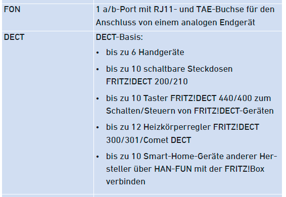
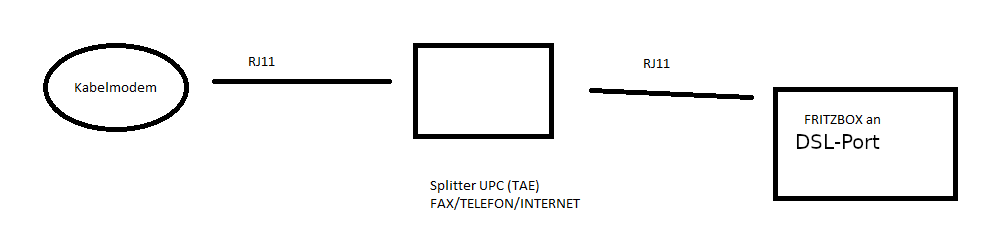
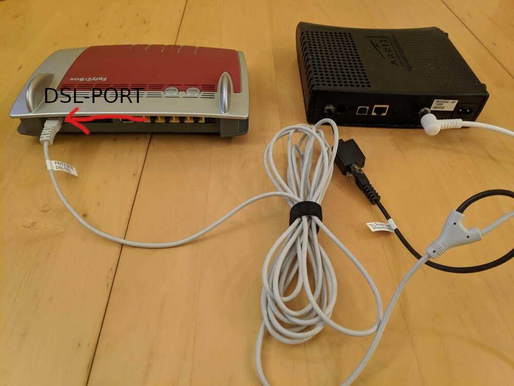

Würde auch die 7590 in schwarz aus DE gehen oder muss die für Ö sein?
Schwarz wäre edel

https://www.ebay.de/itm/AVM-FRITZ-Box-7590-1-1-Home-Server-Speed/254804359904?hash=item3b5385fae0:g:bpkAAOSwhrRf0pFp
Ich habe einen Kabelanschluss, aktuell mit einer Gigaset Basis Station die leider keine abrufbare Anrufliste hat.
Vor kurzem hab ich mir ein Fritzbox 7530 gekauft und dachte ich kann das irgendwie für DECT nutzen als Basis.
Aber irgendwie klappt das nicht so ganz, sind da spezielle Einstellungen zu setzen?
Bei Fon wird das angesteckt oder muss das seitlich angesteckt werden auf RJ11 bzw RJ45?
Geht das überhaupt?
Geht überhaupt nicht.
Eine Option wäre eine einfache DECT Basis zu kaufen oder eine 7490 oder 7590
Die Fritz! Box 7530 ist ein DSL und kein Kabel Router mit einem COAX Anschluss.
vor 9 Minuten schrieb Rexalius2000:Die Fritz! Box 7530 ist ein DSL und kein Kabel Router mit einem COAX Anschluss.
Ein Coax Router würde auch kein Problem lösen.
Es kann nur ein Gerät mit einem fxo Anschluss das Problem lösen, das hat nur die Fritz Box 7x90 Serie.
(Ja andere Lösungen gibt es auch schon, aber da braucht man einen passenden ATA, das ist nicht mehr so einfach)
Mit einer FB 6590 könnte man ja DECT nützen oder liege ich da falsch?
vor 13 Minuten schrieb Rexalius2000:Mit einer FB 6590 könnte man ja DECT nützen oder liege ich da falsch?
Ja aber nicht bei Magenta. Da die Box dort nicht freigegeben wird
vor 31 Minuten schrieb IT-Freak:Ein Coax Router würde auch kein Problem lösen.
Es kann nur ein Gerät mit einem fxo Anschluss das Problem lösen, das hat nur die Fritz Box 7x90 Serie.
(Ja andere Lösungen gibt es auch schon, aber da braucht man einen passenden ATA, das ist nicht mehr so einfach)
Was meinst du mit passenden ATA?
AVM sagt es ginge mit dieser Lösung schon
https://avm.de/service/fritzbox/fritzbox-7530/wissensdatenbank/publication/show/28_Aufbau-ausgehender-Telefonverbindungen-nicht-moglich#zd
Keine Ahnung ob das klappt, Freizeichen krieg ich ja, nur rauswählen bzw anrufe klappen nicht
Würde auch die 7590 in schwarz aus DE gehen oder muss die für Ö sein?
Schwarz wäre edel

https://www.ebay.de/itm/AVM-FRITZ-Box-7590-1-1-Home-Server-Speed/254804359904?hash=item3b5385fae0:g:bpkAAOSwhrRf0pFp
vor 4 Minuten schrieb grazer75:Würde auch die 7590 in schwarz aus DE gehen oder muss die für Ö sein?
Schwarz wäre edel
https://www.ebay.de/itm/AVM-FRITZ-Box-7590-1-1-Home-Server-Speed/254804359904?hash=item3b5385fae0:g:bpkAAOSwhrRf0pFp
Die 7590 ist auch für DSL. Grundsätzlich werden keinen Fritz! Boxen im Magenta/UPC Kabel Netz freigegeben wie
@IT-Freak
schon angemerkt hat, oder handelt es sich bei deinem Anschluss doch um einen DSL Zugang?

vor 16 Minuten schrieb grazer75:Würde auch die 7590 in schwarz aus DE gehen oder muss die für Ö sein?
Schwarz wäre edel
https://www.ebay.de/itm/AVM-FRITZ-Box-7590-1-1-Home-Server-Speed/254804359904?hash=item3b5385fae0:g:bpkAAOSwhrRf0pFp
Grundsätzlich egal, Details siehe unten. Die 7590 ist eigentlich dafür viel zu übertrieben. Die Box macht dann nur Telefonie, sonst nichts. Du musst die überlegen, ob dir diese eine Funktion das ganze wert ist.
ATA steht für Analog Telefon Adapter. Hierbei gibt es 2 Versionen. Es gibt auch eigene ATA Geräte, damit man VoIP Telefonanlagen mit einem analogen Anschluss nachrüsten kann.
Internet > Analog
Analog > Internet
Die 7530 hat nur einen Internet > Analog Adapter eingebaut, die 7590 beide. Das Telefoniesignal was man von der Connect Box bekommt ist eine analoges, deshalb braucht man ein Gerät was mit einem analogen Eingangssignal zurecht kommt. Das ist halt bei den FRITZ!Boxen nur in der DSL Serie bei den 7390, 7490 und 7590 der Fall.
Ob man nun eine DE oder AT Version nimmt ist in diesem Fall egal, wichtig ist nur, dass man irgendwie an die AT Kabel bzw. Adapter kommt.
Der Schwarze Adapter liegt nur bei der AT Version bei, nicht bei der DE Version. Und man braucht das AVM Y Kabel. Sollte nur der TAE Adapter für Telefonie ( Schwarz, nicht grau) und das AVM Y Kabel dabei sein, kann man sich mit einem RJ11 Stecker auf TAE F Buchse Adapter helfen. Nur man jagt dann ein analoges Signal durch 3 Adapter, wo dann schon die Qualität merklich sinkt.
So könnte das dann aussehen.
vor 14 Minuten schrieb IT-Freak:Grundsätzlich egal, Details siehe unten. Die 7590 ist eigentlich dafür viel zu übertrieben. Die Box macht dann nur Telefonie, sonst nichts. Du musst die überlegen, ob dir diese eine Funktion das ganze wert ist.
ATA steht für Analog Telefon Adapter. Hierbei gibt es 2 Versionen. Es gibt auch eigene ATA Geräte, damit man VoIP Telefonanlagen mit einem analogen Anschluss nachrüsten kann.
Internet > Analog
Analog > Internet
Die 7530 hat nur einen Internet > Analog Adapter eingebaut, die 7590 beide. Das Telefoniesignal was man von der Connect Box bekommt ist eine analoges, deshalb braucht man ein Gerät was mit einem analogen Eingangssignal zurecht kommt. Das ist halt bei den FRITZ!Boxen nur in der DSL Serie bei den 7390, 7490 und 7590 der Fall.
Ob man nun eine DE oder AT Version nimmt ist in diesem Fall egal, wichtig ist nur, dass man irgendwie an die AT Kabel bzw. Adapter kommt.
Der Schwarze Adapter liegt nur bei der AT Version bei, nicht bei der DE Version. Und man braucht das AVM Y Kabel. Sollte nur der TAE Adapter für Telefonie ( Schwarz, nicht grau) und das AVM Y Kabel dabei sein, kann man sich mit einem RJ11 Stecker auf TAE F Buchse Adapter helfen. Nur man jagt dann ein analoges Signal durch 3 Adapter, wo dann schon die Qualität merklich sinkt.
So könnte das dann aussehen.
Hmmm, also wäre es möglich auf der 7530 doch noch das zum Laufen zu bringen?
"Es gibt auch eigene ATA Geräte, damit man VoIP Telefonanlagen mit einem analogen Anschluss nachrüsten kann."
Ich hab von der Konfiguration her ein Kabelmodem (Connect Box weiß), für die Telefonie ein eigenes TC7200 (schwarz) für Telefonie, wo ein UPC Splitter dran hängt (Fax, Telefon, Daten), an dem Datenanschluss hängt die DECT basis und auf FAX ein HP Drucker.
Wenn ich den RJ11 Stecker an die Fritzbox stecke, kommt von außen wenn man anruft eine Nachricht das gerade besetzt ist, beim wählen hört man ein Freizeichen, wenn ich fiktiv einen Login erstellen unter eigenen Anbieter ändert sich die Nachricht von extern, intern falsche Eingabe, ohne das nur "keine Ressourcen" also irgendwie geht da was

Also würde auch eine 7590 von 1+1 in schwarz funktionieren für meine Zwecke, Kabel kann man auf Amazon extra bestellen nehm ich an oder auf ebay. Die genauen Bezeichnungen wären cool, das suchen ist echt nicht einfach.
Wenn ich es irgendwie mit der 7530 hinkriegen würde, wäre das natürlich auch nicht schlecht.
vor einer Stunde schrieb grazer75:
Wenn ich es irgendwie mit der 7530 hinkriegen würde, wäre das natürlich auch nicht schlecht.
Ja dazu braucht du aber einen ATA mit fxo. Da ist es aber einfacher eine alte gebrauchte FRITZ!Box zu bekommen.
Der Markt für so ATA von analog auf VoIP gibt es nicht mehr. Teilweise gab es den einmal, aber nach dem die Anbieter alle schon mit VoIP arbeiten, gibt es den Markt nicht mehr. Das Problem ist nur, dass man bei Magenta als Privatperson die Zugangsdaten für VoIP nicht bekommt, deshalb kann sich da die 7530 auch nicht anmelden.
Ein ATA ist eher für Firmen gedacht, und da ist das ganze kein so ein Problem wie bei Privatkunden, da bekommt man Zugangsdaten. Wenn nicht vom Internet Anbieter, dann nimmt man sich halt eine eigene Leistung nur für die Telefonie.
Hab jetzt ein 7590 international version gefunden hoffe das klappt dann ohne Probleme.
Qualität ist nicht schlechter wie mit der Gigaset basis oder?
Ich werde dann vermutlich die 7530 als Mesh + DECT Repeater verwenden, laut AVM geht das dann beides mit der Box wenigstens

Hast du auch Erfahrungen mit dem Upgrade via Freetz bei Fritzboxen? Macht das einen Sinn das raufzuspielen und sich die Arbeit anzutun?
Ich würde die Hände von Freetz lassen.
Von der Qualität her, habe ich es bei meinem Setup gemerkt. Ich habe die fast selbe Ausgangssituation gehabt. Am Tischtelefon habe ich einen Qualitätsunterschied gemerkt.
Ich hätte zwischendurch eine FRITZ!Box für Telefonie drinnen, ist aber unter anderem wegen der Qualität geflogen. War entweder die 7390 oder 7490.
Wobei zwischen Modem bzw kurzzeitig der Fritz!Box und dem Telefon viel Kabel war und einige Spezial Adapter.
vor 20 Stunden schrieb IT-Freak:Ich würde die Hände von Freetz lassen.
Von der Qualität her, habe ich es bei meinem Setup gemerkt. Ich habe die fast selbe Ausgangssituation gehabt. Am Tischtelefon habe ich einen Qualitätsunterschied gemerkt.
Ich hätte zwischendurch eine FRITZ!Box für Telefonie drinnen, ist aber unter anderem wegen der Qualität geflogen. War entweder die 7390 oder 7490.
Wobei zwischen Modem bzw kurzzeitig der Fritz!Box und dem Telefon viel Kabel war und einige Spezial Adapter.
Freetz ist ja nur eine Erweiterung der Fritzbox mit Packages auf linux Basis, wenn man aber einen custom Kernel nimmt kann es vermutlich zu Problemen kommen.
Konnte aber keines auf die 7530 installieren.
Bei der 7590 trau ich es mich nicht vom Preis her schon

Aber wenn du welche hast zum Testen die du nicht mehr brauchst, bevor sie im Mistkübel wandern, gern

Keines Angst, bevor bei mir ein Router in die Tonne wandert, muss der schon gegrillt sein.
Alles andere sehe ich als keinen Grund für einen Entsorgung eines Router

Wo liest man das eigentlich raus das es mit der 7530 nicht gehen sollte/kann und bei der 7590 schon?
https://avm.de/produkte/fritzbox/fritzbox-7530/technische-daten/
https://avm.de/produkte/fritzbox/fritzbox-7590/technische-daten/
Technisch sollte die 7530 es können aber bei der Einrichtung der Telefonie gibt es nur IP Telefonie zur Auswahl
und bei der 7590 laut Anleitung auch analog.
7530 technische Details der Anschlüsse

und von der 7590
Theoretisch könnte es die 7530 auch oder?
Nur in der Software ist es nicht korrekt implementiert?
https://avm.de/produkte/fritzbox/fritzbox-7590/technische-daten/
Du brauchst die Funktion "Analaoges-Festnetz".
2. Punk unter Anschlüsse
Bei der 7530 fehlt das.
Vom Datenblatt her sieht es gleich aus oder?
Ist nur nicht bei der Einrichtigung Verfügbar bei der 7530 oder?
Auf der Seite sieht man einen Unterschied:
https://avm.de/produkte/fritzbox/fritzbox-7530/technische-daten/
Es fehlt der 7530 definitiv die Hardware
Und wie heißt das genau jetzt?
nur die 7490 und 7590 haben dies?
vor 7 Stunden schrieb grazer75:Und wie heißt das genau jetzt?
nur die 7490 und 7590 haben dies?
Ja.
Von den aktuellen Boxen nur die 7490 und 7590 haben die Hardware um an einem analogen oder ISDN Anschluss betrieben zu werden. (Die 7390 auch, ist aber nicht mehr eine aktuelle Box)
Die Connect Box simuliert einen analogen Anschluss.
Also ich hab jetzt die 7590, das RJ11 direkt von der Gigaset Basis in Fon1 und Fon2 probiert, Festnetz eingerichtet, dennoch
keine Ressource wenn ich anrufe, von extern besetzt Ansage der FB
Verkabelung -> Kabelmodem -> Splitter UPC (FAX/TELEFONIE/INTERNET) -> Telefonie geht in FB und Fax in den HP Drucker
Sobald ich Fon1/Fon2 anschließe geht auch das Fax nicht mehr
Wenn ich ein DECT Gerät anschließe kommt aber ein Freizeichen zumindest.
Wo liegt der Fehler, was muss ich an der Verkabelung ändern bzw Konfiguration?
Foto oder Skizzen?
Steck einmal die FRITZ!Box direkt an dem Kabelmodem an.
Hast du in der FRITZ!Box die Telefonnummer eingerichtet?
Vielleicht liegt das Problem am Splitter.
Ich habe einen Kabelanschluss, aktuell mit einer Gigaset Basis Station die leider keine abrufbare Anrufliste hat.
Vor kurzem hab ich mir ein Fritzbox 7530 gekauft und dachte ich kann das irgendwie für DECT nutzen als Basis.
Aber irgendwie klappt das nicht so ganz, sind da spezielle Einstellungen zu setzen?
Bei Fon wird das angesteckt oder muss das seitlich angesteckt werden auf RJ11 bzw RJ45?
Geht das überhaupt?
Ist das von meiner Beschreibung nicht eh nachzuvollziehen?
Anbei das was ich gerade beschrieben hab als Grafik, inwiefern ist das jetzt besser verständlich?
Das Kabelmodem hat 2 RJ11 Ausgänge
Das Kabelmodem hat 2 RJ11 Ausgänge
Oh. OK, die Verbindung zum Kabelmodem muss über das Y-Kabel und den DSL Port gehen.
Einfach den Teil für DSL weglassen

Ich war so frei und hab das Bild korrigiert. So müsste das aussehen.
Alternativ schließe es so wie in diesem Bild an:

das heißt im Prinzip ich muss dann das Kabel was ich in der Gigaset Basis hatte, RJ11 mit einer Kupplung an das schwarze Telefonkabel des Y Kabels stecken, korrekt?
Kann ich die UPC Splitter Lösung belassen oder? Sodaß ich das Fax parallel vom HP Drucker nutzen kann?
Probier ich danke

Mit dem schwarzen Kabel geht es nicht, jedoch mit dem Splitterkabel kommt ein Freizeichen zumindest, aber wählen klappt leider noch nicht, keine Resource wieder am Gigaset als Meldung.
Du musst den schwarzen Teil des Y Kabels irgendwie mit dem UPC Splitter oder direkt mit der Connect Box verbinden. (2. Ist besser)
Dazu brauchst du den schwarzen rj45 auf RJ 11 Adapter.
Andere Ende des AVM Y -Kabel geht in den DSL Port der Fritz Box
So habe ich nun geschafft, allerdings hab ich beide grau/schwarz mittels 058 (RJ45 auf RJ11) Adapter an einer RJ11 Kupplung angeschlossen was wiederum am Modem hängt auf Fon1.
Schadet es beide anzuschließen? Mir kommt vor das die Telefonleitung dadurch bei DECT weniger Probleme hat, wenn ich nur Schwarz anschließe habe ich ein Brummen in der Leitung.
Wenn du die Fritz!Box umkonfigurierst als IP Client sollte das brummen auch weg sein.
Meinst du den Punkt?
"Vorhandene Internetverbindung mitbenutzen (WLAN Mesh / IP-Client-Modus)
Die FRITZ!Box wird Teil des vorhandenen Heimnetzes und übernimmt diesen IP-Adressbereich. Die Firewall der FRITZ!Box wird dabei deaktiviert. Ist der andere Router, der das Heimnetz aufspannt, auch eine FRITZ!Box mit WLAN Mesh-Funktion, kann die vorliegende FRITZ!Box Teil des WLAN Mesh werden."
Der ist schon aktiv
vor 14 Minuten schrieb grazer75:Meinst du den Punkt?
"Vorhandene Internetverbindung mitbenutzen (WLAN Mesh / IP-Client-Modus)Die FRITZ!Box wird Teil des vorhandenen Heimnetzes und übernimmt diesen IP-Adressbereich. Die Firewall der FRITZ!Box wird dabei deaktiviert. Ist der andere Router, der das Heimnetz aufspannt, auch eine FRITZ!Box mit WLAN Mesh-Funktion, kann die vorliegende FRITZ!Box Teil des WLAN Mesh werden."
Der ist schon aktiv
Ja den Punkt.
Ok, dann lag meine Theorie wegen dem Brummen falsch.
Ich hab die Verbindung zu meinem Switch bei der LAN1 angesteckt, bei WAN hat er immer eine eigene vergeben.
So hat die FB eine IP von meinem VLAN.
{kind=link}
_-_Adobe_Acroba_2020-12-13_01-05-39.png.499d3ef763e32f68cd6897e7b65d4be9.png){kind=link}
_-_Adobe_Acroba_2020-12-13_01-06-23.png.f58368fb2a940fa3d2af04d698c16483.png){kind=link}
_-_Adobe_Acroba_2020-12-13_01-06-55.png.23eb5c52b121d9411e9d39e4f22c36f0.png){kind=link}
{kind=link}
{kind=link}